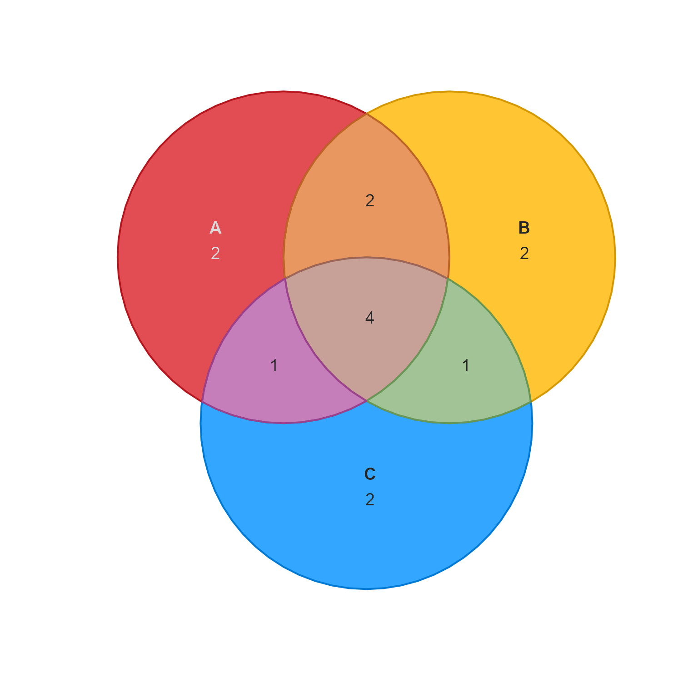
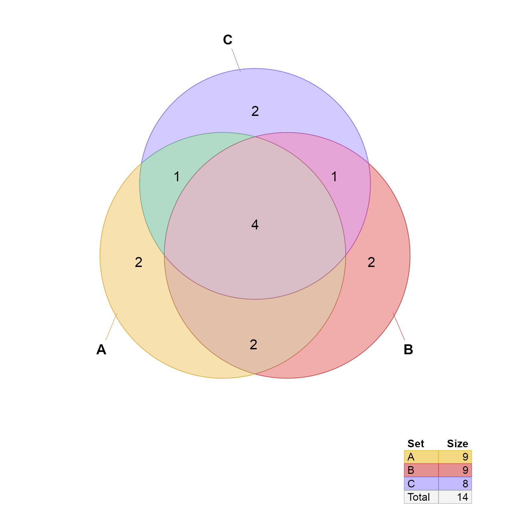

venndir conversion from overlap counts to setlist
counts2setlist(x, sep = "&", ...)
list where the list names are the names of each set,
and values of each list element is a vector of items.
The items are artificial labels used for convenience.
This function takes input in the form of named vector
with overlap counts, which is the input to similar Venn
functions in eulerr::euler(), and is called "expressionInput"
when used with upsetr::fromExpression().
Other venndir conversion:
im2list(),
im_value2list(),
list2im_opt(),
list2im_value(),
overlaplist2setlist(),
signed_counts2setlist()
# example from eulerr::euler() combo <- c(A = 2, B = 2, C = 2, "A&B" = 2, "A&C" = 1, "B&C" = 1, "A&B&C" = 4) setlist <- counts2setlist(combo) setlist;#> $A #> [1] "A_1" "A_2" "A&B_1" "A&B_2" "A&C_1" "A&B&C_1" "A&B&C_2" #> [8] "A&B&C_3" "A&B&C_4" #> #> $B #> [1] "B_1" "B_2" "A&B_1" "A&B_2" "B&C_1" "A&B&C_1" "A&B&C_2" #> [8] "A&B&C_3" "A&B&C_4" #> #> $C #> [1] "C_1" "C_2" "A&C_1" "B&C_1" "A&B&C_1" "A&B&C_2" "A&B&C_3" #> [8] "A&B&C_4" #>#> Warning: "display_counts" is not a graphical parameter#> Warning: "display_counts" is not a graphical parameter#> Warning: "display_counts" is not a graphical parameter#> Warning: "display_counts" is not a graphical parameter#> Warning: "display_counts" is not a graphical parameter#> Warning: "display_counts" is not a graphical parameter#> Warning: "display_counts" is not a graphical parameter#> Warning: "display_counts" is not a graphical parameter#> Warning: "display_counts" is not a graphical parameter#> Warning: "display_counts" is not a graphical parameter#> Warning: "display_counts" is not a graphical parameter#> Warning: "display_counts" is not a graphical parameter#> Warning: "display_counts" is not a graphical parameter#> Warning: "display_counts" is not a graphical parameter#> Warning: "display_counts" is not a graphical parameter#> Warning: "display_counts" is not a graphical parameter#> Warning: "display_counts" is not a graphical parameter#> Warning: "display_counts" is not a graphical parameter#> Warning: "display_counts" is not a graphical parameter#> Warning: "display_counts" is not a graphical parameter#> Warning: "display_counts" is not a graphical parameter#> Warning: "display_counts" is not a graphical parameter